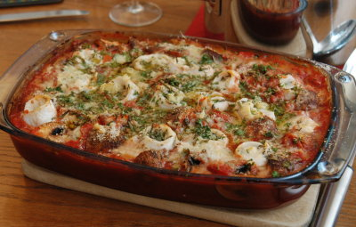

| Zutaten für 6 Personen: | |
| 700 g | Felchenfilets oder Egli, Flundern, Soles und Rotzungen |
| 1/2 | Zitrone (nur Saft) |
| 1/2 Tl | Salz |
| wenig | weisser Pfeffer aus der Mühle |
| 1 Päckli (125 g) | Cantadou mit Zwiebeln oder grünem Pfeffer |
| 250 g | geviertelte Champignons |
| 1 Dose à 400 g Abtropfgewicht | gehackte Pelati |
| 1/4 Tl | Salz |
| Pfeffer aus der Mühle | |
| 1 Tl | frischer oder 1/2 Tl getrockneter Oregano |
| Provençale Belag: | |
| 1 Bund | Petersilie |
| 6 - 8 | Basilikumblätter |
| 2 | Knoblauchzehen |
| 4 El | Paniermehl |
| 4 El | Reibkäse |
| wenig | Butter oder Margarine |
| 1 El | Olivenöl |
| Beilage: | |
| frisches Brot, Trockenreis oder Salzkartoffeln | |
Die Haut vom Fischhändler entfernen lassen. Breite Filets längs halbieren. Gräten mit einer Pinzette entfernen. Fische mit Zitronensaft, Salz und Pfeffer würzen und mit Cantadou auf der silbern schimmernden Seite bestreichen. Fischfilets aufrollen und mit Zahnstocher fixieren.
Den Ofen auf 220°C vorheizen. Ofenfeste Form fetten.
Die Champignons vierteln und in der Form verteilen. Die gehackten Pelati darüber verteilen. Die Fischröllchen mit Salz, Pfeffer und Oregano würzen und leicht ins Gemüse drücken.
Die Petersilie und die Basilikumblätter hacken. Den Knoblauch pressen und mit dem Paniermehl und dem Reibkäse mischen. Über die Fische verteilen. Margarine oder Butterflöckli darüber streuen und 1 Esslöffel Olivenöl darüber träufeln.
20 Minuten in der Mitte des Ofens bei 220°C gratinieren.
Die Beilage zubereiten.
Betty Bossi, Vielseitige Fischküche, Seite 26. Siehe auch Flundernröllchen
Wunderbar! Richard Eigenmann, 5.12.1999
Am 7.10.2008 für 4 Personen zubereitet. Ich habe nicht alle 700g Filets verwendet und es hatte vorig. Entsprechend habe ich das Rezept auf 6 Personen geändert. RE
@LINKBACK_TAG@ @WAKELOCK@